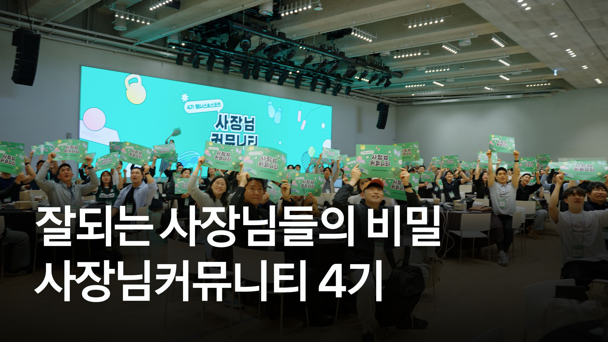

사장님커뮤니티 4기서비스별 성과 및개선 VOC 공유 보고서
지난 5~6월 피트니스·스포츠 업종의 사장님 665명을 대상으로 진행한 프로그램에서 확인된 서비스별 설정·활용 성과와 실제 사용 과정의 개선 VOC를 정리했습니다.
사장님커뮤니티 4기2026. 05—06
주요 지표
75개5월 신규 채널 생성참여 전 월평균 14.5개 대비 5.2배
120곳예약하기 신규 입점참여 기간 전체
94%상담매니저 활성 유지율신규 활성 133개 중 125개 유지
116곳맵광고 집행참여 전 4곳 대비 29배
단순 서비스 소개가 아니라,실제 실행까지
이번 4기는 서비스를 소개하는 데 그치지 않고, 사장님들이 그동안 잘 몰랐던 기능과 광고를 직접 설정하고 운영해보는 실행형 과정으로 진행했습니다. 이를 통해 신규 설정뿐 아니라 메시지 발송, 예약 발생, 광고 집행까지 실제 서비스 이용 행동으로 연결했습니다.
이 페이지에는 서비스별 수치 성과와 실제 사용 과정에서 확인된 개선 요청을 함께 담았습니다.
각 서비스 담당자가 개선 과제와 안내 보완 지점을 검토할 때 활용할 수 있습니다.
각 서비스 담당자가 개선 과제와 안내 보완 지점을 검토할 때 활용할 수 있습니다.
기능 이해→직접 설정→실제 집행→성과 확인→VOC 수집
데이터 기준참여 기간 2026.5.1~6.30실제 선정자 665명월별 고유 사업자 수는 여러 달에 중복될 수 있어 기간 합계와 다를 수 있음
서비스별 성과와 개선 VOC
서비스 담당자가 수치 성과와 대표 개선 요청을 한눈에 확인하고, 버튼을 통해 전체 VOC 원문까지 이어서 볼 수 있도록 구성했습니다.
커뮤니티에서 나온 실제 의견
이미지를 누르면 원본 해상도로 자세히 볼 수 있습니다.
4기 스케치 영상
직접 설정하고 실행하며 서로의 경험을 나눈 사장님커뮤니티 4기의 현장을 3분 57초 영상으로 담았습니다.

서비스 개선의 출발점으로 활용해주세요.
모든 VOC는 사장님들이 서비스를 직접 설정하고 운영하는 과정에서 나온 의견입니다.
담당 서비스의 개선 과제와 안내 보완 지점을 검토할 때 참고해 주세요.